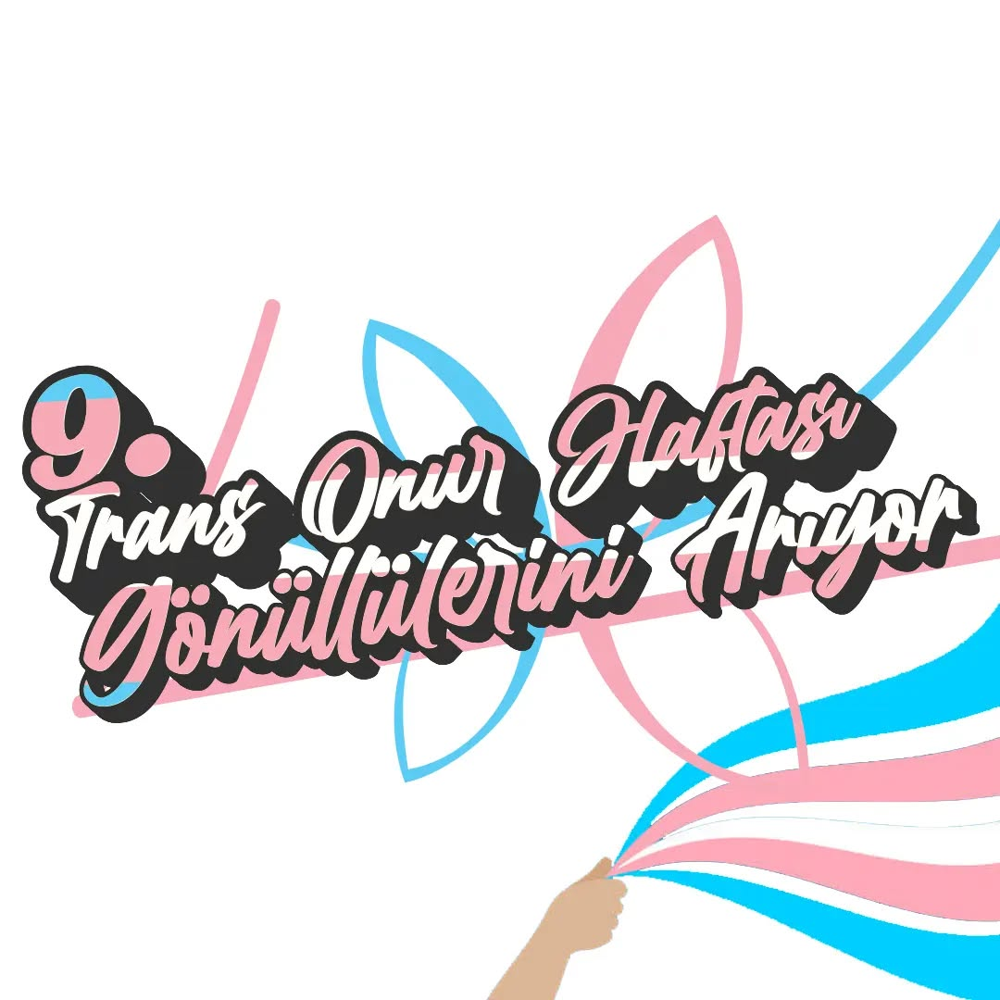

2022-11-28 20:26:00
9. Trans Onur Haftası gönüllülerini arıyor!
Kolektif ve bağımsız örgütlenen Trans Onur Haftası seni çağırıyor!
2010 yılında çıktığımız bu yolda hep birlikte direndik. Yeri geldi gullüm alıktık yeri geldi madileştik ama birbirimizden vazgeçmedik.
Nefretin körüklendiği, sirkaflarımızın kapatıldığı, çarklarımızın ablukaya alındığı bu süreçte gündem ve politikalarımızı biz belirleyelim.
Bağımsız örgütlenecek trans hareketin güçlendiriciliğine inanıyoruz, sokağa inanıyoruz, devletçe tanınmayan cinsiyetlerimiz yüzünden iş bulamamaya değil, her alanda varolmaya inanıyoruz.
Gel konuşalım, dayanışmaya ve bir arada olmaya çok ihtiyacımız var.
30 Kasım'da yapılacak toplantıda seni de görmek istiyoruz.
Tarih: 30.11.2022
Saat: 19:00
Mekan bilgisi için DM at lubunya❤️
